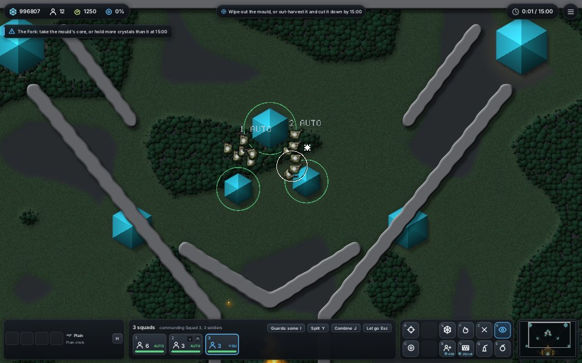
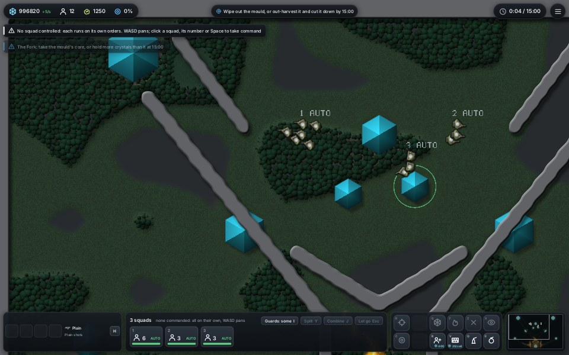

<title>Squad Let Go</title>
<meta name="claude:viewport-fit-sides" content="cover">
<link rel="stylesheet" href="https://fonts.googleapis.com/css2?family=Space+Grotesk:wght@500;600&family=Inter:wght@400;500&display=swap">
<style>
/* Layout: one column, clip first, then two stills side by side, then the keys. */
:root{--bg:#f3f5f4;--fg:#18201c;--muted:#56625b;--card:#ffffff;--edge:#d6ddd8;--accent:#2f9e6a;
--display:"Space Grotesk",system-ui,sans-serif;--body:Inter,system-ui,sans-serif}
@media (prefers-color-scheme:dark){:root:not([data-theme="light"]){--bg:#121815;--fg:#e4ebe6;--muted:#9aa89f;--card:#1a221e;--edge:#2c3731;--accent:#5fd39a;color-scheme:dark}}
:root[data-theme="dark"]{--bg:#121815;--fg:#e4ebe6;--muted:#9aa89f;--card:#1a221e;--edge:#2c3731;--accent:#5fd39a;color-scheme:dark}
body{background:var(--bg);color:var(--fg);font-family:var(--body);line-height:1.55}
main{max-width:980px;margin:0 auto;padding-block:28px 48px;padding-left:max(16px,env(safe-area-inset-left,0px));padding-right:max(16px,env(safe-area-inset-right,0px));display:grid;gap:22px}
h1{font-family:var(--display);font-size:1.8rem;margin:0;text-wrap:balance}
h2{font-family:var(--display);font-size:1.1rem;margin:0 0 6px}
p{margin:0;max-width:68ch}
.lede{color:var(--muted)}
video,img{width:100%;max-width:100%;border-radius:8px;border:1px solid var(--edge);display:block}
.stills{display:grid;grid-template-columns:1fr 1fr;gap:14px}
@media (max-width:640px){.stills{grid-template-columns:1fr}}
figure{margin:0;display:grid;gap:6px;min-width:0}
figcaption{font-size:.88rem;color:var(--muted)}
.keys{background:var(--card);border:1px solid var(--edge);border-radius:10px;padding:16px;display:grid;gap:8px}
.row{display:grid;grid-template-columns:150px 1fr;gap:12px}
@media (max-width:480px){.row{grid-template-columns:1fr;gap:0}}
kbd{font-family:var(--display);font-weight:600;color:var(--accent)}
ul{margin:0;padding-left:20px}
</style>
<main>
  <h1>Squad Let Go</h1>
  <p class="lede">Squad mode, Fork seed 1, three squads. Squad 3 is steered right with D, then Esc lets go: every squad keeps its own orders, each tile and each squad on the map says AUTO, and WASD pans the camera while the game runs. Space takes Squad 3 back and the camera returns to it. Rendered offscreen on llvmpipe, 0:00 to 0:13 of game time.</p>
  <figure>
    <video src="free-camera.mp4" controls autoplay muted loop playsinline></video>
    <figcaption>The clip (12 s at 15 fps). Squad 1 was sent west and Squad 2 on an attack-move east before letting go; both keep walking with nobody controlling them.</figcaption>
  </figure>
  <div class="stills">
    <figure><figcaption>Controlling Squad 3: its tile says YOU, the others AUTO, and Let go (Esc) sits on the panel header.</figcaption></figure>
    <figure><figcaption>After Esc: "none commanded", all three tiles AUTO, "1 auto", "2 auto", "3 auto" over the squads, Split, Combine and Let go greyed.</figcaption></figure>
  </div>
  <section class="keys">
    <h2>How it works</h2>
    <div class="row"><kbd>Esc</kbd><span>Let go of the squad. A second Esc opens the menu. While a building is being placed, Esc cancels that first.</span></div>
    <div class="row"><kbd>Let go</kbd><span>The same, as a button on the squad panel's header.</span></div>
    <div class="row"><kbd>WASD</kbd><span>With no squad controlled, pans the camera, paused or not.</span></div>
    <div class="row"><kbd>Click a squad</kbd><span>Takes command of it. So do its tile, its number key, Shift + box, or Space (the last squad you had).</span></div>
    <div class="row"><kbd>Right click</kbd><span>With none controlled it gives no order and says how to pick a squad.</span></div>
  </section>
  <section>
    <h2>What "on its own" means</h2>
    <ul>
      <li>The squad let go stops steering and volleying and keeps any order it was sent on, including its Shift queue.</li>
      <li>It fires at slime in reach, guards while it works and heals, as every uncontrolled squad already did. It loses the controlled squad's faster, harder shots.</li>
      <li>A soldier bought while none is controlled joins the lowest-numbered live squad.</li>
    </ul>
  </section>
</main>
